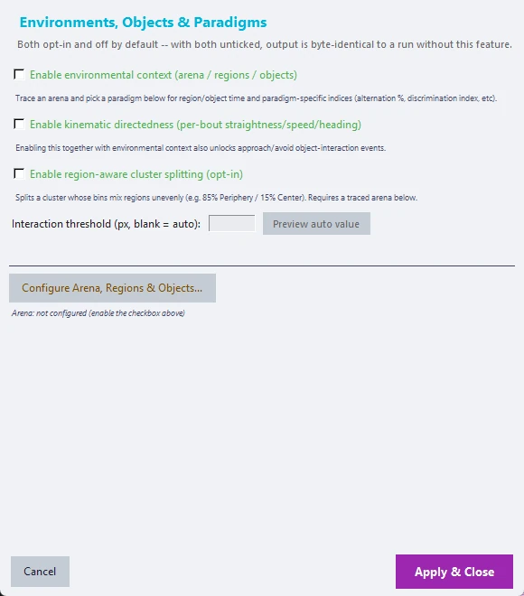
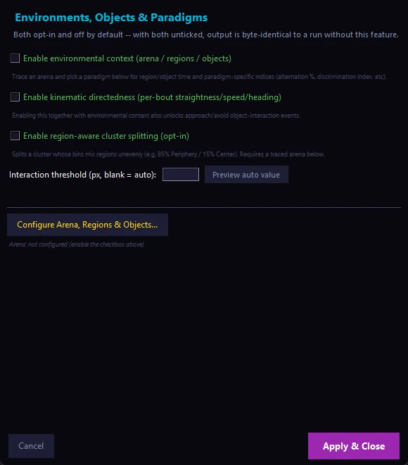

This tab reports paradigm-specific measures. It has content only for sessions that were run with environmental context tracing switched on (see Behavioural paradigms and arena context) and that have a session_env_context.json file. Sessions without it show a message instead of a plot.
- Load sessions in the Combined Analysis tab as usual (a mix with and without arena data is fine).
- Open the Paradigm Results tab and click Refresh from Loaded Sessions. The sub-view that matches your traced paradigm is selected for you; use the Paradigm Sub-view list to browse the others.
| Sub-view | Paradigm | What it shows |
|---|---|---|
| Generic | Any (default for custom and open field) | Whole-arena occupancy heatmap and region-time bar. For the open field also total distance, centre-zone entries (looks for a traced region with "center" in its name), the centre-zone time course and the distribution of mean speed |
| Y-Maze Alternation | y_maze |
Per-arm occupancy, spontaneous alternation %, total arm entries and an arm-entry sequence strip |
| Elevated Plus Maze | elevated_plus_maze |
Open- and closed-arm occupancy, % open-arm time and entries, latency to the first open-arm entry, total arm entries, an open-arm time course, and a head-dip proxy (nose crossing the traced edge; a geometric proxy, not a validated classifier) |
| Discrimination Index | novel_object |
Investigation density around each object, discrimination index (tested against chance), total exploration time, nose-to-novel-object distance, investigation bout durations and latency to first contact |
| Sociability / Social Novelty | three_chamber |
Per-chamber occupancy, the Phase 1 sociability index and the Phase 2 social-novelty index (each tested against 0), chamber entries, nose-to-stranger distance, investigation bouts and latency |
| Place Preference / CPP | place_preference |
Pre/post occupancy, preference index (tested against 0), a cumulative chamber-crossing time course and, with Repeated measures and a real pre-test phase, a paired pre/post comparison |
| Fear Conditioning (Contextual) | fear_conditioning_contextual |
Freezing % time course (mean ± SEM, shock shading in Acquisition only), behaviour-proportion time course, extinction curve, cross-phase fear trajectory and an ethogram with shock markers. A locomotor control (path length outside freezing bouts) is always shown |
| Fear Conditioning (Cued) | fear_conditioning_cued |
Everything in the contextual view, plus tone shading on every phase with tone trials, latency to freeze after the tone, and a paired pre-tone versus during-tone comparison (within-animal Wilcoxon test) |
| Approach/Avoid Events | Any | Trajectories with each detected event drawn as an arrow (green = approach, red = avoid), the event rate and target distribution. This is a rule-based heuristic that has not been validated against expert scoring, so treat it as a starting point for review |
Fear conditioning needs no arena tracing, because freezing is the readout. You enter a one-time protocol schedule (baseline, trials, shock and tone timing for each phase) in the Protocol Schedule tab of the Environments window. The phase is read from Label 2 (for example Acquisition, Extinction, Recall), the context from Label 1 and the animal from Label 3. Freezing comes from a behaviour you named "Freezing" in Step 4 (the preferred source); if there is none, CUBE falls back to a multi-body-point immobility detector that is marked "(auto-detected)" wherever it appears and has not been validated against hand-scored freezing. Shock and tone shading come from the configured schedule, so they will not align if the real timing of your rig differs.
Every sub-view also shows grouped bar charts of the % time each cluster, and each group, spends in each traced region. Bar charts show each animal's own value as an open ring on top of its group's bar.
Statistics. Between-group comparisons use the same Kruskal-Wallis and Dunn tests, with false discovery rate correction, as Unbiased Analytics. Discrimination Index and CPP also get a one-sample test against a fixed reference (chance or zero), marked with daggers so it is never confused with the stars used for between-group brackets.
Occupancy heatmaps show real position density. The region and object outlines on top are an approximation (the convex hull of the positions recorded in or near each shape), not the exact traced boundary, and are labelled "(approx.)".
Save All Results (Combined Analysis tab) includes the figures of every applicable sub-view and a paradigm_derived_metrics.csv summary. For the requirements and limits of each paradigm, see Behavioral_Paradigms_Reference.md.
Environmental Context & Object Interaction (opt-in)#
Switch it on in the Environments, Objects, Paradigms... window; this also enables Configure Arena, Regions & Objects..., which opens the tracing window.


- Paradigm. You first choose one paradigm for the project: Open Field, Novel Object / Animal Recognition, Y-Maze, Elevated Plus Maze, Three-Chamber Test, Place Preference / CPP, Fear Conditioning (Contextual or Cued), or Custom. It decides which drawing tools, name suggestions and role lists you see (fear conditioning needs a protocol schedule instead of traced regions). A batch that mixes experiment types needs separate CUBE projects.
- Tab 1, Define Reference Arena. Trace the arena boundary and any named regions or objects on a reference frame by clicking points and then Finish Shape. Every shape, including the boundary, needs at least 3 points. Shapes that matter for the paradigm's measures get a Role (for example Familiar or Novel for Novel Object objects, Arm or Hub for Y-Maze regions). The measure uses the role, not the display name, so you can name shapes as you like. A warning appears when a paradigm's measure cannot yet be computed (for example Y-Maze needs at least 3 regions with the role Arm). Save as Template... and Load Template... store the paradigm and shapes for reuse.
- Tab 2, Apply to Other Videos. Every other video gets the reference shapes by default. Drag on the frame to nudge all shapes together (a slightly shifted camera). Edit individual shapes makes that video an independent override where each shape can be dragged on its own; Reset to Reference undoes it.
- Coordinates. The tracing window reads frames through the same crop rectangle that DLC tracked on (Advanced DLC settings, crop region), so traced shapes and pose data share one coordinate system.
- Interaction threshold. Left blank, CUBE uses one body length per session (from that session's own spine length) as the object-contact distance. Enter a pixel value to override it, or click Preview auto value.
Output. model/session_env_context.json holds, per session, per-bin region and object time series, summaries and the paradigm measures (spontaneous alternation % for Y-Maze, open-arm time, entries and latency for the elevated plus maze, the discrimination index for Novel Object, sociability and social-novelty indices for Three-Chamber, and the preference index for Place Preference). Region and object columns (pct_time_in_region_<name>, pct_time_near_object_<name>, mean_heading_angle_to_object_<name>) are added to the same _enriched.csv table as kinematic directedness; with both on, one table holds both. With the setting off, or on but nothing traced, none of this is written and the output is identical to a run without the feature.
Approach and avoid events. With both environmental context and kinematic directedness on, a rule-based detector also writes <stem>_approach_events.csv (only when at least one event is found), with a classification of approach or avoid. A fast, straight bout followed by a slower investigation-type bout that ends within the interaction threshold of a traced region or object is flagged as approach. A fast, straight bout that started near a traced shape and ended clearly farther away (or left the region) is flagged as avoid. This is a heuristic that has not been validated against expert scoring.